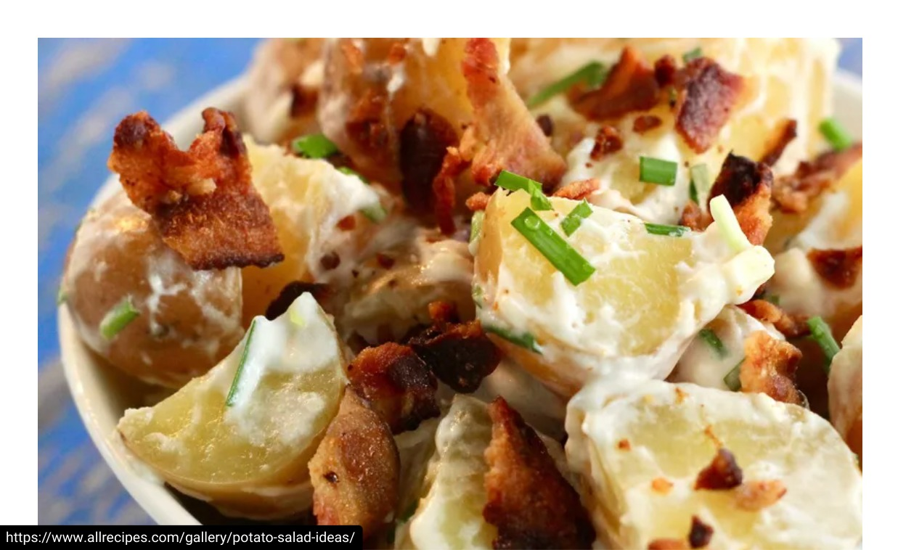
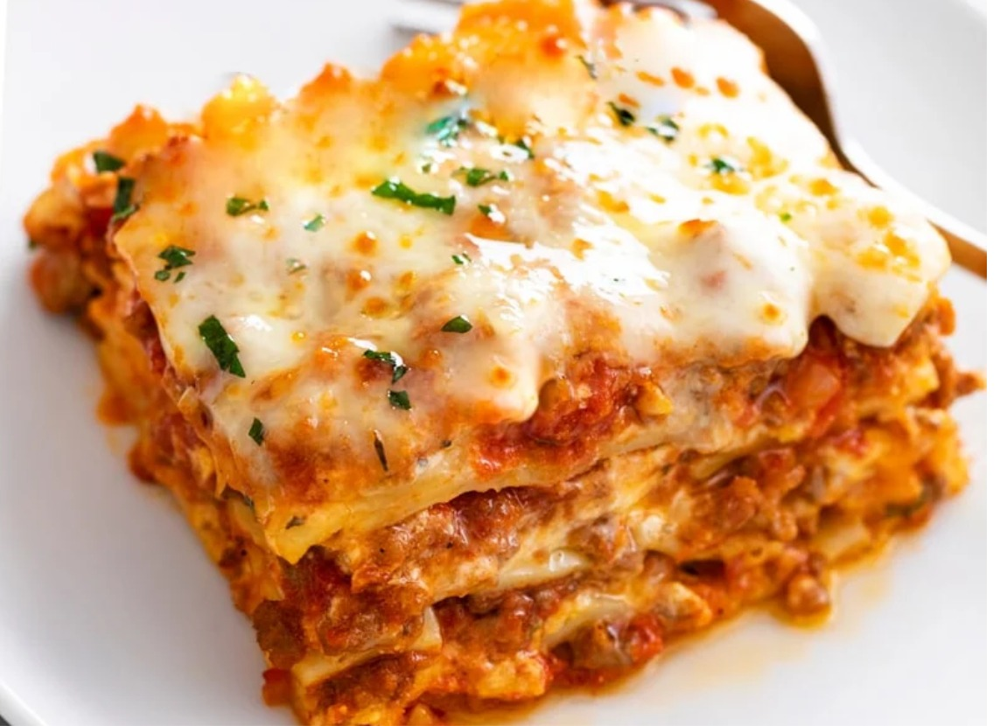

A hot dog is a meal consisting of a sausageHot dogs are a popular type of food made from cooked sausages, typically made of beef, pork, or a combination of meats. They are typically served in a sliced bun and are often garnished with various condiments, such as mustard, ketchup, onions, mayonnaise, sauerkraut, cheese, or relish. Hot dogs are a common fast food item and are often enjoyed at picnics, barbecues, sporting events, and other casual dining occasions.
The origin of the hot dog can be traced back to Germany, where it is known as a "frankfurter" or "wurstchen." It is believed that German immigrants brought the concept of the hot dog to the United States in the 19th century, where it gained widespread popularity. The term "hot dog" is thought to have originated from a humorous association with the dachshund dog breed, which has a similar elongated shape.
Hot dogs are typically made by stuffing seasoned meat into a casing, which is then cooked and smoked. However, there are also vegetarian and vegan versions of hot dogs made from plant-based ingredients like tofu, seitan, or vegetables.
Hot dogs are a versatile food and can be customized to suit individual tastes. They are often enjoyed at cookouts, baseball games, and other outdoor events.
RAMEN
Ramen is a popular Japanese dish consisting of Chinese-style wheat noodles served in a flavorful broth, typically topped with various ingredients such as sliced pork, seaweed, green onions, and boiled eggs. It's a beloved comfort food in Japan and has gained international popularity, with many variations and regional styles available around the world.
Here are some key components of ramen:
1. Noodles: Ramen noodles are made from wheat flour, water, and sometimes other ingredients like kansui (alkaline mineral water) or egg. They come in various shapes and thicknesses, with straight and curly varieties being common.
2. Broth: The broth is a crucial element of ramen, and it comes in several varieties. The most common types include:
- Shoyu (soy sauce) broth: Made with soy sauce and often chicken or vegetable broth. It has a savory and slightly salty flavor.
- Miso broth: Made with fermented soybean paste (miso) and can be rich and hearty, with a hint of umami.
- Tonkotsu broth: Made from pork bones, resulting in a creamy and intensely flavorful broth.
- Shio (salt) broth: A clear broth seasoned with salt, offering a clean and delicate taste.

SANDWICHES
Sandwiches are a popular and versatile type of food enjoyed worldwide. They consist of various ingredients placed between slices of bread, which serve as the outer layers or "sandwich" the filling. Sandwiches come in countless variations, and they can be customized to suit individual preferences. Here are some common types of sandwiches and their components:
1. **Classic Deli Sandwich**: This type of sandwich typically includes thinly sliced deli meats (such as turkey, ham, roast beef, or pastrami) and cheese (common choices include Swiss, cheddar, or provolone). It's often garnished with lettuce, tomatoes, onions, and condiments like mayonnaise and mustard. It's served on various types of bread, like white, wheat, rye, or sourdough.
2. **Grilled Cheese Sandwich**: A simple yet beloved sandwich made by grilling or toasting bread with melted cheese in the middle. It can be enhanced with additional ingredients like bacon, tomatoes, or herbs for extra flavor.
3. **Club Sandwich**: This triple-decker sandwich typically contains layers of roasted or grilled chicken or turkey, bacon, lettuce, tomato, and mayonnaise. It's usually divided into quarters and secured with toothpicks.
4. **BLT (Bacon, Lettuce, and Tomato)**: As the name suggests, this sandwich features crispy bacon, lettuce, and tomato slices, usually served with mayonnaise or a similar dressing.
5. **Peanut Butter and Jelly (PB&J)**: A classic and simple sandwich made by spreading peanut butter and fruit jam or jelly between slices of bread. It's a favorite among kids and adults alike.
6. **Reuben**: A hot sandwich consisting of corned beef, Swiss cheese, sauerkraut, and Russian dressing, often grilled on rye bread.
7. **Cuban Sandwich**: A Cuban-inspired sandwich made with roast pork, ham, Swiss cheese, pickles, and mustard, typically pressed and toasted on Cuban bread.
8. **Vegetarian and Vegan Sandwiches**: These sandwiches are filled with a variety of plant-based ingredients like roasted vegetables, hummus, avocado, tofu, or vegetarian deli slices, catering to those who prefer meatless options.
9. **Submarine (Sub) or Hoagie**: A long roll filled with a combination of meats, cheeses, vegetables, and condiments. Variations like the Italian sub, turkey sub, or meatball sub are popular.
10. **Gyro**: A Greek sandwich featuring thinly sliced, seasoned meat (often lamb or beef) served in a pita bread with vegetables, yogurt-based tzatziki sauce, and sometimes feta cheese.
11. **Open-Faced Sandwich**: A sandwich with only one slice of bread, topped with various ingredients, such as spreads, meats, cheeses, and vegetables.
12. **Breakfast Sandwich**: Typically eaten in the morning, these sandwiches feature breakfast ingredients like eggs, bacon, sausage, and cheese, often served on a biscuit, English muffin, or bagel.
13. **Tea Sandwiches**: Delicate and bite-sized sandwiches often served at afternoon tea. They can include fillings like cucumber and cream cheese, smoked salmon, or egg salad.
